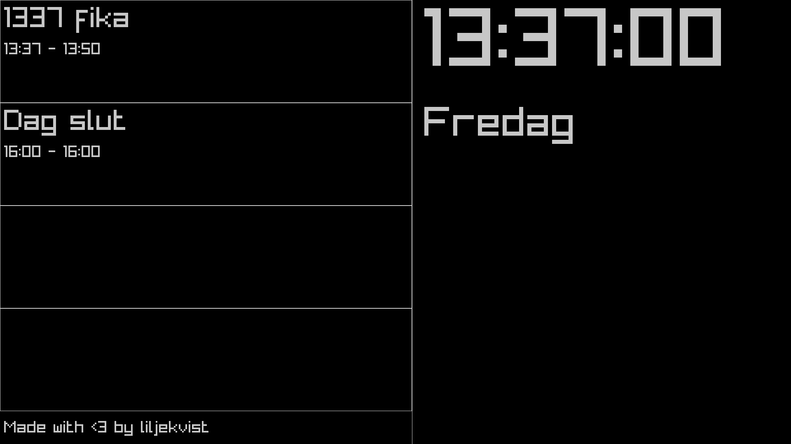

As the title suggests, its a clock that views the time and events that occur during that day. Its main purpose is to help me and my classmates keep track of time. While also having some fun features like pulling the top voted meme from Reddit(/r/ProgrammerHumor).
 The clock UI